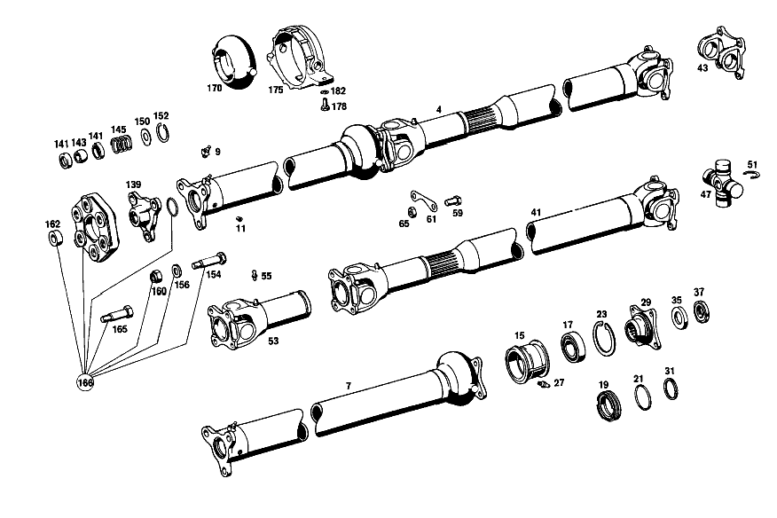

| № | Артикул | Название | Кол. | Примечание | Ограничение |
|---|---|---|---|---|---|
| 4 | A 110 410 17 03 | КАРДАННЫЙ ВАЛ | 1 | ДВУХЧАСТН. Коробка передач [412] БОЛЬШЕ НЕ ПОСТАВЛЯЕТСЯ, ЗАКАЗЫВАТЬ ОТДЕЛЬНЫЕ ДЕТАЛИ [001] 000,001,010 UP TO CHASSIS 130557; 100,101,110 UP TO CHASSIS 225647 | |
| 7 | A 110 410 14 01 | - КАРДАННЫЙ ВАЛ | 1 | Коробка передач [001] 000,001,010 UP TO CHASSIS 130557; 100,101,110 UP TO CHASSIS 225647 | |
| 9 | N 071412 006200 | - Пресс-масленка | 1 | ||
| 11 | A 122 997 00 87 | - Клапан | 1 | ||
| 15 | A 110 413 04 01 | - КОРПУС | - | Коробка передач | |
| 15 | A 110 410 04 22 | - Опора карданного вала | 1 | Коробка передач [004] 000,001,010 FROM CHASSIS 076272; 100,101,110 FROM CHASSIS 119431 | |
| 15 | A 110 410 04 22 | - Опора карданного вала | 1 | Автоматическая коробка переключения передач [005] 000,001,010 FROM CHASSIS 079199; 100,101,110 FROM CHASSIS 124478 | |
| 17 | A 003 981 23 25 | - ШАРИКОПОДШИПНИК | 1 | ||
| 19 | A 110 413 00 51 | - ДИСТАНЦИОННОЕ КОЛЬЦО | 1 | Коробка передач [002] 000,001,010 UP TO CHASSIS 076271; 100,101,110 UP TO CHASSIS 119430 | |
| 19 | A 110 413 00 51 | - ДИСТАНЦИОННОЕ КОЛЬЦО | 1 | Автоматическая коробка переключения передач [003] 000,001,010 UP TO CHASSIS 079198; 100,101,110 UP TO CHASSIS 124477 | |
| 21 | A 180 997 03 40 | - УПЛОТНИТ. КОЛЬЦО | 3 | Коробка передач [002] 000,001,010 UP TO CHASSIS 076271; 100,101,110 UP TO CHASSIS 119430 | |
| 21 | A 180 997 03 40 | - УПЛОТНИТ. КОЛЬЦО | 3 | Автоматическая коробка переключения передач [003] 000,001,010 UP TO CHASSIS 079198; 100,101,110 UP TO CHASSIS 124477 | |
| 23 | N 000472 055000 | - Стопорное кольцо | 1 | 55X2 Коробка передач [004] 000,001,010 FROM CHASSIS 076272; 100,101,110 FROM CHASSIS 119431 | |
| 23 | N 000472 055000 | - Стопорное кольцо | 1 | 55X2 Автоматическая коробка переключения передач [005] 000,001,010 FROM CHASSIS 079199; 100,101,110 FROM CHASSIS 124478 | |
| 27 | N 071412 006100 | - Пресс-масленка | 1 | Коробка передач [402] БОЛЬШЕ НЕ ПОСТАВЛЯЕТСЯ [002] 000,001,010 UP TO CHASSIS 076271; 100,101,110 UP TO CHASSIS 119430 | |
| 27 | N 071412 006100 | - Пресс-масленка | 1 | Автоматическая коробка переключения передач [402] БОЛЬШЕ НЕ ПОСТАВЛЯЕТСЯ [003] 000,001,010 UP TO CHASSIS 079198; 100,101,110 UP TO CHASSIS 124477 | |
| 29 | A 111 411 02 45 | - ФЛАНЕЦ | 1 | Коробка передач [004] 000,001,010 FROM CHASSIS 076272; 100,101,110 FROM CHASSIS 119431 | |
| 29 | A 111 411 02 45 | - ФЛАНЕЦ | 1 | Автоматическая коробка переключения передач [005] 000,001,010 FROM CHASSIS 079199; 100,101,110 FROM CHASSIS 124478 | |
| 31 | A 110 413 00 80 | - УПЛОТНИТ. КОЛЬЦО | 2 | Коробка передач [002] 000,001,010 UP TO CHASSIS 076271; 100,101,110 UP TO CHASSIS 119430 | |
| 31 | A 110 413 00 80 | - УПЛОТНИТ. КОЛЬЦО | 2 | Автоматическая коробка переключения передач [003] 000,001,010 UP TO CHASSIS 079198; 100,101,110 UP TO CHASSIS 124477 | |
| 35 | A 111 994 00 43 | - ПРЕДОХРАНИТЕЛЬ | 1 | ||
| 37 | A 111 990 00 60 | - ГАЙКА | 1 | ||
| 41 | A 111 410 02 02 | - КАРДАННЫЙ ВАЛ | 1 | [001] 000,001,010 UP TO CHASSIS 130557; 100,101,110 UP TO CHASSIS 225647 | |
| 43 | A 111 411 00 44 | - Фланец шарнира | 1 | ||
| 47 | A 111 410 00 31 | - Крестовина кард. шарнира | 1 | ||
| 51 | A 188 994 05 34 | - Пруж. стопорное кольцо | 4 | 1.45 MM | |
| 53 | A 111 410 02 28 | - ШАРНИР ШАРОВОЙ | 1 | ||
| 55 | N 071412 006100 | - Пресс-масленка | 1 | [402] БОЛЬШЕ НЕ ПОСТАВЛЯЕТСЯ | |
| 59 | A 111 990 00 20 | - БОЛТ | 4 | ||
| 61 | A 111 994 02 09 | - Стопорная шайба | 2 | ||
| 65 | N 913021 010001 | - ГАЙКА | - | ||
| 65 | N 304035 010001 | - Шестигранная гайка | 4 | ||
| 80 | N 071412 006200 | - Пресс-масленка | 1 | ||
| 85 | A 122 997 00 87 | - Клапан | 1 | ||
| 87 | A 111 410 00 31 | - Крестовина кард. шарнира | 1 | Коробка передач [014] 000,001,004,010,016 UP TO CHASSIS 186333; 002,003,005,011,017 UP TO CHASSIS 036492; 100,101,104,110,116 UP TO CHASSIS 342566 | |
| 87 | A 111 410 00 31 | - Крестовина кард. шарнира | 1 | Автоматическая коробка переключения передач [015] 000,001,004,010,016 UP TO CHASSIS 187228; 002,003,005,011,017 UP TO CHASSIS 031528; 100,101,104,110,116 UP TO CHASSIS 352064 | |
| 91 | A 188 994 05 34 | - Пруж. стопорное кольцо | 1 | 1.5 MM Коробка передач [014] 000,001,004,010,016 UP TO CHASSIS 186333; 002,003,005,011,017 UP TO CHASSIS 036492; 100,101,104,110,116 UP TO CHASSIS 342566 | |
| 91 | A 188 994 05 34 | - Пруж. стопорное кольцо | 1 | 1.5 MM Автоматическая коробка переключения передач [015] 000,001,004,010,016 UP TO CHASSIS 187228; 002,003,005,011,017 UP TO CHASSIS 031528; 100,101,104,110,116 UP TO CHASSIS 352064 | |
| 102 | A 110 413 04 01 | - КОРПУС | - | ||
| 102 | A 110 410 04 22 | - Опора карданного вала | 1 | [016] 10/50, 20/60; 100,101,110 UP TO CHASSIS 278075; 12/52, 22/62; 100,101,110 UP TO CHASSIS 265139 | |
| 105 | A 003 981 23 25 | - ШАРИКОПОДШИПНИК | 1 | [016] 10/50, 20/60; 100,101,110 UP TO CHASSIS 278075; 12/52, 22/62; 100,101,110 UP TO CHASSIS 265139 | |
| 107 | N 000472 055000 | - Стопорное кольцо | 1 | 55X2 [016] 10/50, 20/60; 100,101,110 UP TO CHASSIS 278075; 12/52, 22/62; 100,101,110 UP TO CHASSIS 265139 | |
| 131 | A 111 411 00 44 | - Фланец шарнира | 1 | Коробка передач [019] 000,001,010,016 UP TO CHASSIS 186333; 002,003,011,017 UP TO CHASSIS 036492; 100,101,110,116 UP TO CHASSIS 342566 | |
| 131 | A 111 411 00 44 | - Фланец шарнира | 1 | Автоматическая коробка переключения передач [020] 000,001,010,016 UP TO CHASSIS 187228; 002,003,011,017 UP TO CHASSIS 031528; 100,101,110,116 UP TO CHASSIS 352064 | |
| 139 | A 111 410 01 30 | Центрирующая звездочка | 1 | ||
| 141 | A 136 411 01 18 | - Шаровой подпятник | 2 | ||
| 143 | A 184 411 00 17 | - ШАРИК ЦЕНТРИРУЮЩАЯ | 1 | ||
| 145 | A 110 993 37 01 | - пружина | 1 | [027] 000,001,004,010,016 FROM CHASSIS 153366; 002,003,005,011,017 FROM CHASSIS 012619; 100,101,104,110,116 FROM CHASSIS 269326 | |
| 150 | A 111 411 00 76 | - ШАЙБА | 1 | [417] БОЛЬШЕ НЕ ПОСТАВЛЯЕТСЯ, ЗАКАЗЫВАТЬ КОМПЛЕКТ ПОСТАВКИ [026] 000,001,004,010,016 UP TO CHASSIS 153365; 002,003,005,011,017 UP TO CHASSIS 012618; 100,101,104,110,116 UP TO CHASSIS 269325 | |
| 152 | N 000472 030000 | - Стопорное кольцо | 1 | [026] 000,001,004,010,016 UP TO CHASSIS 153365; 002,003,005,011,017 UP TO CHASSIS 012618; 100,101,104,110,116 UP TO CHASSIS 269325 | |
| 154 | A 110 411 01 71 | Болт призонный | 3 | [030] 000,001,004,010,016 FROM CHASSIS 079199; 100,101,104,110,116 FROM CHASSIS 124478 | |
| 156 | A 187 990 14 40 | Диск | 3 | [030] 000,001,004,010,016 FROM CHASSIS 079199; 100,101,104,110,116 FROM CHASSIS 124478 | |
| 160 | N 000985 012005 | ГАЙКА | 3 | [030] 000,001,004,010,016 FROM CHASSIS 079199; 100,101,104,110,116 FROM CHASSIS 124478 | |
| 162 | A 120 411 00 60 | Уплотнительное кольцо | 1 | ||
| 165 | A 110 411 00 71 | Болт призонный | 3 | ||
| 166 | A 108 410 01 15 | Ремк-т эластичной муфты | 1 | К\-Т ДЕТАЛЕЙ | |
| 170 | A 111 413 00 12 | САЙЛЕНТ-БЛОК | 1 | ||
| 175 | A 110 413 04 29 | ОПОРА ПОДШИПНИКА | 1 | ||
| 178 | N 000933 008154 | Винт | - | ||
| 178 | N 304017 008021 | Винт с 6-гранной головкой | 2 | M8X20 | |
| 182 | N 000127 008203 | Пружинное кольцо | 2 | ||
| A 110 410 18 03 | КАРДАННЫЙ ВАЛ | - | Автоматическая коробка переключения передач | ||
| A 110 410 15 01 | - КАРДАННЫЙ ВАЛ | 1 | ДВУХЧАСТН. Автоматическая коробка переключения передач [001] 000,001,010 UP TO CHASSIS 130557; 100,101,110 UP TO CHASSIS 225647 | ||
| A 180 413 02 01 | - КОРПУС | 1 | Коробка передач [002] 000,001,010 UP TO CHASSIS 076271; 100,101,110 UP TO CHASSIS 119430 | ||
| A 180 413 02 01 | - КОРПУС | 1 | Автоматическая коробка переключения передач [003] 000,001,010 UP TO CHASSIS 079198; 100,101,110 UP TO CHASSIS 124477 | ||
| A 180 413 01 51 | - ДИСТАНЦИОННОЕ КОЛЬЦО | - | |||
| A 111 411 00 45 | - ФЛАНЕЦ | 1 | Коробка передач [002] 000,001,010 UP TO CHASSIS 076271; 100,101,110 UP TO CHASSIS 119430 | ||
| A 111 411 00 45 | - ФЛАНЕЦ | 1 | Автоматическая коробка переключения передач [003] 000,001,010 UP TO CHASSIS 079198; 100,101,110 UP TO CHASSIS 124477 | ||
| A 188 994 00 34 | - Пруж. стопорное кольцо | 4 | 1.50 MM | ||
| A 188 994 01 34 | - Пруж. стопорное кольцо | 4 | 1.55 MM | ||
| A 188 994 02 34 | - СТОПОРН. КОЛЬЦО | 4 | 1.60 MM | ||
| A 188 994 03 34 | - Пруж. стопорное кольцо | 4 | 1.65 MM | ||
| A 188 994 04 34 | - Пруж. стопорное кольцо | 4 | 1.70 MM | ||
| A 111 411 00 44 | - Фланец шарнира | 1 | |||
| A 111 410 00 31 | - Крестовина кард. шарнира | 1 | |||
| A 188 994 05 34 | - Пруж. стопорное кольцо | 4 | 1.45 MM | ||
| A 188 994 00 34 | - Пруж. стопорное кольцо | 4 | 1.50 MM | ||
| A 188 994 02 34 | - СТОПОРН. КОЛЬЦО | 4 | 1.60 MM | ||
| A 188 994 03 34 | - Пруж. стопорное кольцо | 4 | 1.65 MM | ||
| A 188 994 04 34 | - Пруж. стопорное кольцо | 4 | 1.70 MM | ||
| A 000 411 00 47 | ДЕМПФЕР | 1 | [006] UP TO CHASSIS 044797 FOR SUBSEQUENT INSTALLATION IN THE CASE OF EXCESSIVE VIBRATIONS | ||
| A 110 410 45 03 | КАРДАННЫЙ ВАЛ | - | Коробка передач [008] FROM CHASSIS 225648 | ||
| A 110 410 60 03 | КАРДАННЫЙ ВАЛ | 1 | ДВУХЧАСТН. Автоматическая коробка переключения передач [412] БОЛЬШЕ НЕ ПОСТАВЛЯЕТСЯ, ЗАКАЗЫВАТЬ ОТДЕЛЬНЫЕ ДЕТАЛИ | ||
| A 110 410 25 01 | - КАРДАННЫЙ ВАЛ | 1 | С ПОДШИПНИКОМ Коробка передач [009] 10/50, 20/60 FROM CHASSIS 225648-278075; 12/52, 22/62 FROM CHASSIS 225648-265139 | ||
| A 110 410 40 01 | - КАРДАННЫЙ ВАЛ | 1 | БЕЗ ОПОРЫ Коробка передач [010] 10/50, 20/60 FROM CHASSIS 278076; 12/52, 22/62 FROM CHASSIS 265140 | ||
| A 110 410 30 01 | - КАРДАННЫЙ ВАЛ | 1 | С ПОДШИПНИКОМ Автоматическая коробка переключения передач [009] 10/50, 20/60 FROM CHASSIS 225648-278075; 12/52, 22/62 FROM CHASSIS 225648-265139 | ||
| A 110 410 55 01 | - КАРДАННЫЙ ВАЛ | 1 | БЕЗ ОПОРЫ Автоматическая коробка переключения передач [010] 10/50, 20/60 FROM CHASSIS 278076; 12/52, 22/62 FROM CHASSIS 265140 | ||
| A 110 411 00 72 | - ГАЙКА | - | |||
| A 110 411 01 72 | - Зажимная гайка | 1 | |||
| A 188 994 00 34 | - Пруж. стопорное кольцо | 1 | 1.5 MM Коробка передач [014] 000,001,004,010,016 UP TO CHASSIS 186333; 002,003,005,011,017 UP TO CHASSIS 036492; 100,101,104,110,116 UP TO CHASSIS 342566 | ||
| A 188 994 00 34 | - Пруж. стопорное кольцо | 1 | 1.5 MM Автоматическая коробка переключения передач [015] 000,001,004,010,016 UP TO CHASSIS 187228; 002,003,005,011,017 UP TO CHASSIS 031528; 100,101,104,110,116 UP TO CHASSIS 352064 | ||
| A 188 994 02 34 | - СТОПОРН. КОЛЬЦО | 1 | 1.6 MM Коробка передач [014] 000,001,004,010,016 UP TO CHASSIS 186333; 002,003,005,011,017 UP TO CHASSIS 036492; 100,101,104,110,116 UP TO CHASSIS 342566 | ||
| A 188 994 02 34 | - СТОПОРН. КОЛЬЦО | 1 | 1.6 MM Автоматическая коробка переключения передач [015] 000,001,004,010,016 UP TO CHASSIS 187228; 002,003,005,011,017 UP TO CHASSIS 031528; 100,101,104,110,116 UP TO CHASSIS 352064 | ||
| A 188 994 03 34 | - Пруж. стопорное кольцо | 1 | 1.65 MM Коробка передач [014] 000,001,004,010,016 UP TO CHASSIS 186333; 002,003,005,011,017 UP TO CHASSIS 036492; 100,101,104,110,116 UP TO CHASSIS 342566 | ||
| A 188 994 03 34 | - Пруж. стопорное кольцо | 1 | 1.65 MM Автоматическая коробка переключения передач [015] 000,001,004,010,016 UP TO CHASSIS 187228; 002,003,005,011,017 UP TO CHASSIS 031528; 100,101,104,110,116 UP TO CHASSIS 352064 | ||
| A 188 994 04 34 | - Пруж. стопорное кольцо | 1 | 1.7 MM Коробка передач [014] 000,001,004,010,016 UP TO CHASSIS 186333; 002,003,005,011,017 UP TO CHASSIS 036492; 100,101,104,110,116 UP TO CHASSIS 342566 | ||
| A 188 994 04 34 | - Пруж. стопорное кольцо | 1 | 1.7 MM Автоматическая коробка переключения передач [015] 000,001,004,010,016 UP TO CHASSIS 187228; 002,003,005,011,017 UP TO CHASSIS 031528; 100,101,104,110,116 UP TO CHASSIS 352064 | ||
| A 111 411 02 45 | - ФЛАНЕЦ | 1 | [016] 10/50, 20/60; 100,101,110 UP TO CHASSIS 278075; 12/52, 22/62; 100,101,110 UP TO CHASSIS 265139 | ||
| A 111 994 00 43 | - ПРЕДОХРАНИТЕЛЬ | 1 | [016] 10/50, 20/60; 100,101,110 UP TO CHASSIS 278075; 12/52, 22/62; 100,101,110 UP TO CHASSIS 265139 | ||
| A 111 990 00 60 | - ГАЙКА | 1 | [016] 10/50, 20/60; 100,101,110 UP TO CHASSIS 278075; 12/52, 22/62; 100,101,110 UP TO CHASSIS 265139 | ||
| A 110 410 19 02 | - КАРДАННЫЙ ВАЛ | 1 | С ПОДШИПНИКОМ [010] 10/50, 20/60 FROM CHASSIS 278076; 12/52, 22/62 FROM CHASSIS 265140 | ||
| A 111 410 02 28 | - ШАРНИР ШАРОВОЙ | 1 | [016] 10/50, 20/60; 100,101,110 UP TO CHASSIS 278075; 12/52, 22/62; 100,101,110 UP TO CHASSIS 265139 | ||
| A 111 411 00 44 | - Фланец шарнира | 1 | Коробка передач [017] 100,101,110 UP TO CHASSIS 342566; 002,003,011 UP TO CHASSIS 036492 | ||
| A 111 411 00 44 | - Фланец шарнира | 1 | Автоматическая коробка переключения передач [018] 100,101,110 UP TO CHASSIS 352064; 002,003,011 UP TO CHASSIS 031528 | ||
| A 111 410 00 31 | - Крестовина кард. шарнира | 1 | Коробка передач [017] 100,101,110 UP TO CHASSIS 342566; 002,003,011 UP TO CHASSIS 036492 | ||
| A 111 410 00 31 | - Крестовина кард. шарнира | 1 | Автоматическая коробка переключения передач [018] 100,101,110 UP TO CHASSIS 352064; 002,003,011 UP TO CHASSIS 031528 | ||
| A 188 994 05 34 | - Пруж. стопорное кольцо | 4 | 1.45 MM Коробка передач [017] 100,101,110 UP TO CHASSIS 342566; 002,003,011 UP TO CHASSIS 036492 | ||
| A 188 994 05 34 | - Пруж. стопорное кольцо | 4 | 1.45 MM Автоматическая коробка переключения передач [018] 100,101,110 UP TO CHASSIS 352064; 002,003,011 UP TO CHASSIS 031528 | ||
| A 188 994 00 34 | - Пруж. стопорное кольцо | 4 | 1.50 MM Коробка передач [017] 100,101,110 UP TO CHASSIS 342566; 002,003,011 UP TO CHASSIS 036492 | ||
| A 188 994 00 34 | - Пруж. стопорное кольцо | 4 | 1.50 MM Автоматическая коробка переключения передач [018] 100,101,110 UP TO CHASSIS 352064; 002,003,011 UP TO CHASSIS 031528 | ||
| A 188 994 02 34 | - СТОПОРН. КОЛЬЦО | 4 | 1.60 MM Коробка передач [017] 100,101,110 UP TO CHASSIS 342566; 002,003,011 UP TO CHASSIS 036492 | ||
| A 188 994 02 34 | - СТОПОРН. КОЛЬЦО | 4 | 1.60 MM Автоматическая коробка переключения передач [018] 100,101,110 UP TO CHASSIS 352064; 002,003,011 UP TO CHASSIS 031528 | ||
| A 188 994 03 34 | - Пруж. стопорное кольцо | 4 | 1.65 MM Коробка передач [017] 100,101,110 UP TO CHASSIS 342566; 002,003,011 UP TO CHASSIS 036492 | ||
| A 188 994 03 34 | - Пруж. стопорное кольцо | 4 | 1.65 MM Автоматическая коробка переключения передач [018] 100,101,110 UP TO CHASSIS 352064; 002,003,011 UP TO CHASSIS 031528 | ||
| A 188 994 04 34 | - Пруж. стопорное кольцо | 4 | 1.70 MM Коробка передач [017] 100,101,110 UP TO CHASSIS 342566; 002,003,011 UP TO CHASSIS 036492 | ||
| A 188 994 04 34 | - Пруж. стопорное кольцо | 4 | 1.70 MM Автоматическая коробка переключения передач [018] 100,101,110 UP TO CHASSIS 352064; 002,003,011 UP TO CHASSIS 031528 | ||
| N 071412 006100 | - Пресс-масленка | 1 | [402] БОЛЬШЕ НЕ ПОСТАВЛЯЕТСЯ | ||
| A 111 410 00 31 | Крестовина кард. шарнира | 2 | [023] 10/50, 20/60 FROM CHASSIS 278076-342566; 12/52, 22/62 FROM CHASSIS 265140-352064 | ||
| A 111 410 00 31 | Крестовина кард. шарнира | 1 | [016] 10/50, 20/60; 100,101,110 UP TO CHASSIS 278075; 12/52, 22/62; 100,101,110 UP TO CHASSIS 265139 | ||
| A 188 994 05 34 | - Пруж. стопорное кольцо | 8 | 1.45 MM Коробка передач [014] 000,001,004,010,016 UP TO CHASSIS 186333; 002,003,005,011,017 UP TO CHASSIS 036492; 100,101,104,110,116 UP TO CHASSIS 342566 | ||
| A 188 994 05 34 | - Пруж. стопорное кольцо | 8 | 1.45 MM Автоматическая коробка переключения передач [015] 000,001,004,010,016 UP TO CHASSIS 187228; 002,003,005,011,017 UP TO CHASSIS 031528; 100,101,104,110,116 UP TO CHASSIS 352064 | ||
| A 188 994 00 34 | - Пруж. стопорное кольцо | 8 | 1.50 MM Коробка передач [019] 000,001,010,016 UP TO CHASSIS 186333; 002,003,011,017 UP TO CHASSIS 036492; 100,101,110,116 UP TO CHASSIS 342566 | ||
| A 188 994 00 34 | - Пруж. стопорное кольцо | 8 | 1.50 MM Автоматическая коробка переключения передач [020] 000,001,010,016 UP TO CHASSIS 187228; 002,003,011,017 UP TO CHASSIS 031528; 100,101,110,116 UP TO CHASSIS 352064 | ||
| A 188 994 02 34 | - СТОПОРН. КОЛЬЦО | 8 | 1.60 MM Коробка передач [019] 000,001,010,016 UP TO CHASSIS 186333; 002,003,011,017 UP TO CHASSIS 036492; 100,101,110,116 UP TO CHASSIS 342566 | ||
| A 188 994 02 34 | - СТОПОРН. КОЛЬЦО | 8 | 1.60 MM Автоматическая коробка переключения передач [020] 000,001,010,016 UP TO CHASSIS 187228; 002,003,011,017 UP TO CHASSIS 031528; 100,101,110,116 UP TO CHASSIS 352064 | ||
| A 188 994 03 34 | - Пруж. стопорное кольцо | 8 | 1.65 MM Коробка передач [019] 000,001,010,016 UP TO CHASSIS 186333; 002,003,011,017 UP TO CHASSIS 036492; 100,101,110,116 UP TO CHASSIS 342566 | ||
| A 188 994 03 34 | - Пруж. стопорное кольцо | 8 | 1.65 MM Автоматическая коробка переключения передач [020] 000,001,010,016 UP TO CHASSIS 187228; 002,003,011,017 UP TO CHASSIS 031528; 100,101,110,116 UP TO CHASSIS 352064 | ||
| A 188 994 04 34 | - Пруж. стопорное кольцо | 8 | 1.70 MM Коробка передач [019] 000,001,010,016 UP TO CHASSIS 186333; 002,003,011,017 UP TO CHASSIS 036492; 100,101,110,116 UP TO CHASSIS 342566 | ||
| A 188 994 04 34 | - Пруж. стопорное кольцо | 8 | 1.70 MM Автоматическая коробка переключения передач [020] 000,001,010,016 UP TO CHASSIS 187228; 002,003,011,017 UP TO CHASSIS 031528; 100,101,110,116 UP TO CHASSIS 352064 | ||
| A 110 413 04 01 | - КОРПУС | - | |||
| A 110 410 04 22 | - Опора карданного вала | 1 | [025] 10/50, 20/60; 100,101,110 FROM CHASSIS 278076; 12/52, 22/62; 100,101,110 FROM CHASSIS 265140 | ||
| A 003 981 23 25 | - ШАРИКОПОДШИПНИК | 1 | [025] 10/50, 20/60; 100,101,110 FROM CHASSIS 278076; 12/52, 22/62; 100,101,110 FROM CHASSIS 265140 | ||
| N 000472 055000 | - Стопорное кольцо | 1 | 55X2 [025] 10/50, 20/60; 100,101,110 FROM CHASSIS 278076; 12/52, 22/62; 100,101,110 FROM CHASSIS 265140 | ||
| A 180 997 10 40 | Уплотнительное кольцо | 1 | |||
| A 184 993 04 01 | - ПРУЖИНА | - | [026] 000,001,004,010,016 UP TO CHASSIS 153365; 002,003,005,011,017 UP TO CHASSIS 012618; 100,101,104,110,116 UP TO CHASSIS 269325 | ||
| N 900055 030110 | - СТОПОРНОЕ КОЛЬЦО | 1 | [027] 000,001,004,010,016 FROM CHASSIS 153366; 002,003,005,011,017 FROM CHASSIS 012619; 100,101,104,110,116 FROM CHASSIS 269326 | ||
| A 180 411 06 15 | ДИСК ШАРНИРА | - | [028] ПО ОТДЕЛЬНОСТИ БОЛЬШЕ НЕ ПОСТАВЛЯЕТСЯ,ТОЛЬКО В РЕМ.КОМПЛЕКТЕ | ||
| A 186 411 05 71 | БОЛТ | - | Коробка передач [002] 000,001,010 UP TO CHASSIS 076271; 100,101,110 UP TO CHASSIS 119430 | ||
| A 186 411 05 71 | БОЛТ | - | Автоматическая коробка переключения передач [003] 000,001,010 UP TO CHASSIS 079198; 100,101,110 UP TO CHASSIS 124477 | ||
| A 186 411 01 71 | БОЛТ | - | Коробка передач [031] UP TO CHASSIS 084520; UP TO CHASSIS 133808 | ||
| A 186 411 01 71 | БОЛТ | - | Автоматическая коробка переключения передач [032] UP TO CHASSIS 08404; UP TO CHASSIS 133963 | ||
| A 187 990 14 40 | Диск | 3 | |||
| N 000985 012005 | ГАЙКА | 3 | |||
| N 000094 003005 | ШПЛИНТ | 6 | [003] 000,001,010 UP TO CHASSIS 079198; 100,101,110 UP TO CHASSIS 124477 | ||
| N 000557 008002 | Гайка | 2 | |||
| A 111 990 00 20 | БОЛТ | 4 | |||
| A 111 994 02 09 | Стопорная шайба | 2 | |||
| N 913021 010001 | ГАЙКА | - | |||
| N 304035 010001 | Шестигранная гайка | 4 |
Позиций: 149 · подписано на схемах: 61 · колесо — плавный зум в курсор, перетаскивание — пан, двойной клик — зум, клик по артикулу — скопировать.